Abra o Flowlab

Foto da tela.
No navegador, vá para flowlab.io.
Se aparecer Log in no canto de cima à direita, clique nele e entre com a sua conta antes de seguir.
- Aparece Log in
- Clique nele e entre com o e-mail e a senha da sua conta. Sem entrar, o jogo não fica salvo.
Entre em MY GAMES
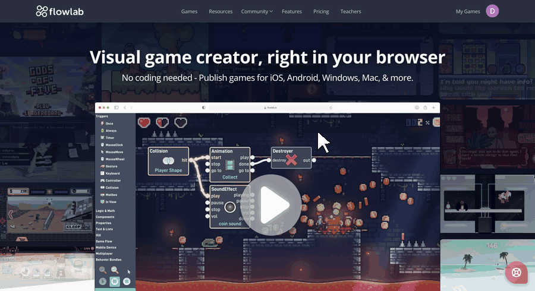

O clipe repete sozinho. Repare onde o cursor vai antes de clicar.
Foto da tela.
No alto à direita, clique em My Games.
O jogo da Aula 1 está aí na lista — ele fica guardado. Hoje a gente faz outro, do zero.
- Minha lista está vazia
- Você pode estar em outra conta. Clique na bolinha do canto de cima e confira.
Crie um jogo novo

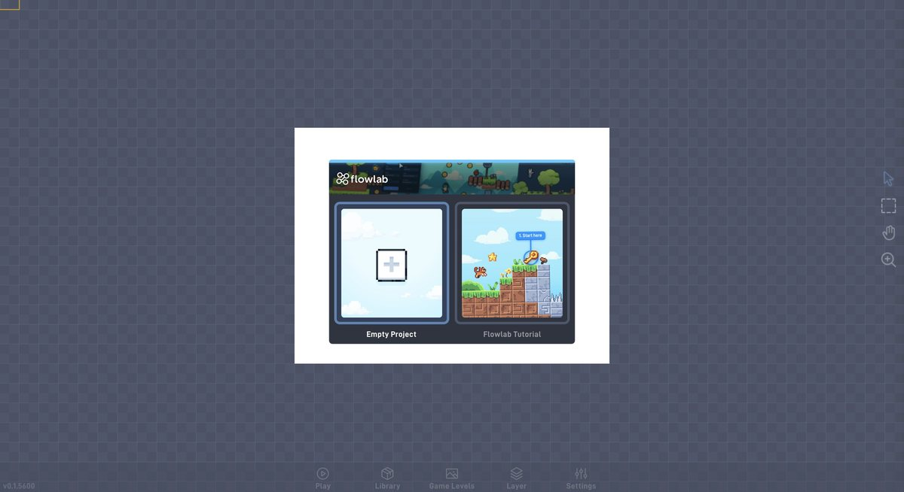
O clipe repete sozinho. Repare onde o cursor vai antes de clicar.
Foto da tela.
Clique no botão verde + New Game, no canto direito.
- Não aconteceu nada
- Clique de novo, uma vez só, bem no meio do botão verde. Às vezes ele demora alguns segundos para abrir a janelinha.
Escolha o PROJETO VAZIO


O clipe repete sozinho. Repare onde o cursor vai antes de clicar.
Foto da tela.
Clique na figura da esquerda, a do + grande.
Clique na figura, não no nome embaixo dela — o nome não responde.
- Abriu o Flowlab Tutorial
- Volte para My Games, apague esse jogo nos três pontinhos e comece de novo.
Crie o jogador
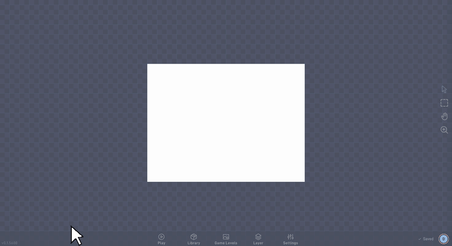
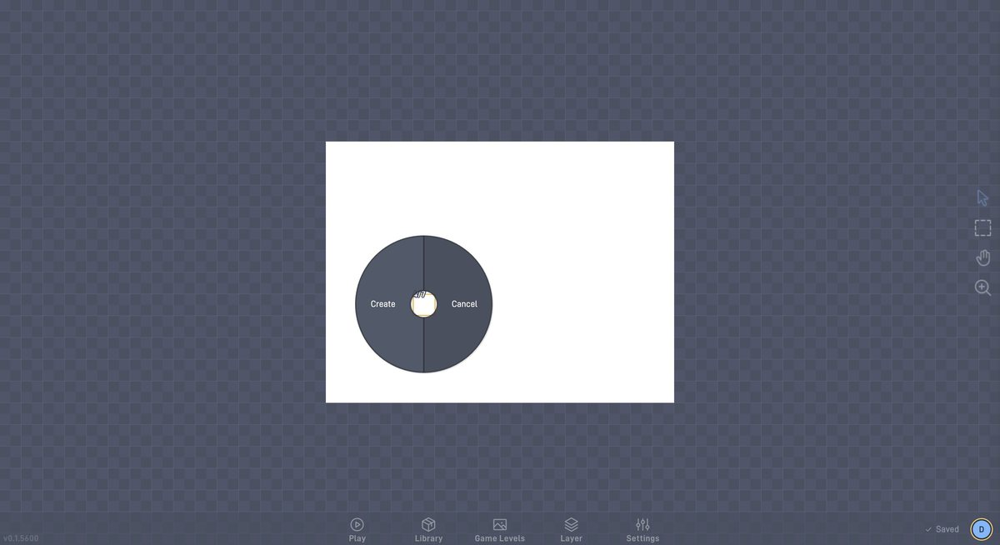
O clipe repete sozinho. Repare onde o cursor vai antes de clicar.
Foto da tela.
Clique uma vez dentro da folha branca, na parte de baixo e à esquerda — o boneco vai começar ali.
Abre a roda com Create e Cancel.
- Apareceu Clone, Edit, Delete
- Aquela casa já tem um objeto. Clique em Cancel e escolha uma casa vazia.
Escolha CREATE
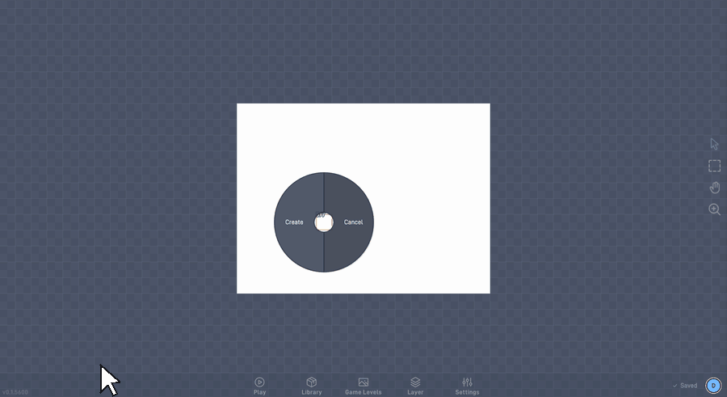
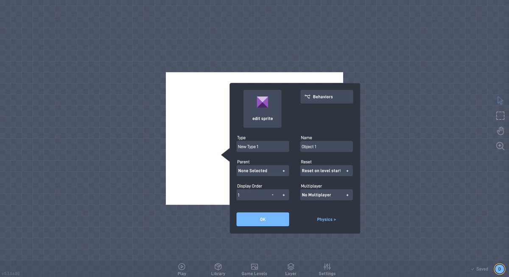
O clipe repete sozinho. Repare onde o cursor vai antes de clicar.
Foto da tela.
Clique na metade Create da roda.
Abre o painel do objeto, igual ao da Aula 1: edit sprite, Behaviors, Name e, no canto de baixo, Physics >.
- Cliquei em Cancel
- Clique na mesma casa de novo e escolha Create.
Dê o nome JOGADOR
Foto da tela.
No campo Name, apague o que está escrito, escreva Jogador e aperte Tab.
Não aperte Enter: o Enter fecha o painel antes da hora.
- O painel fechou
- Foi o Enter. Clique na casa do boneco, escolha Edit e escreva de novo, terminando com Tab.
Escolha o desenho do jogador
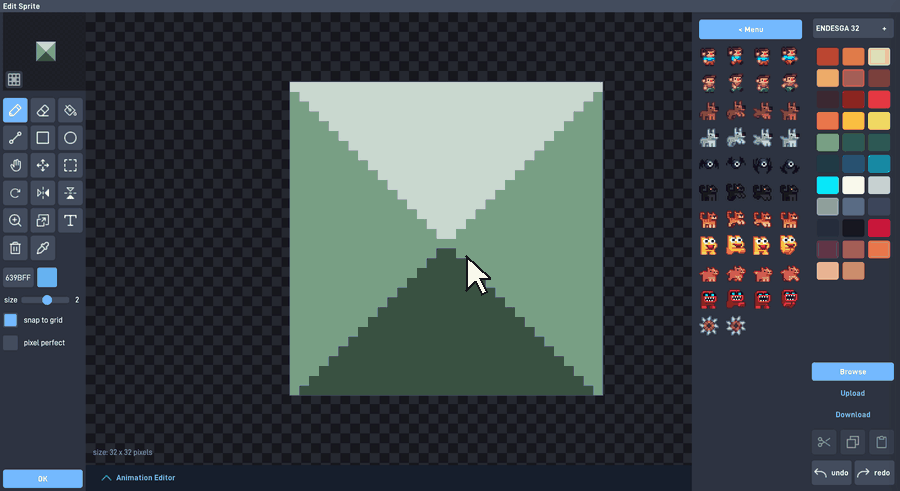
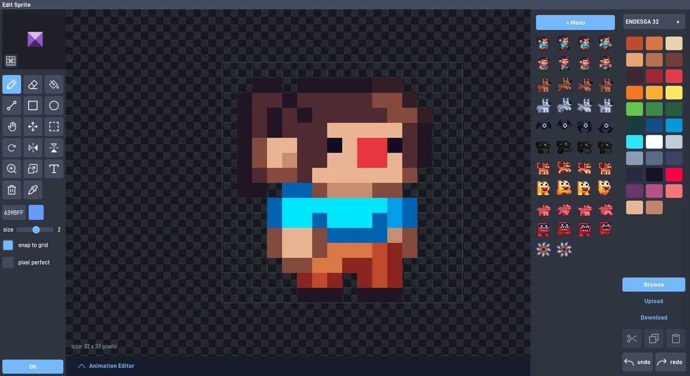
O clipe repete sozinho. Repare onde o cursor vai antes de clicar.
Foto da tela.
Clique em edit sprite. O Flowlab tem bibliotecas de desenhos prontos — use uma:
1. Clique em Browse, embaixo da paleta de cores.
2. Se aparecer o botão azul < Menu no alto, clique nele.
3. Clique em Flowlab Sprites e depois em Characters.
4. Clique no primeiro boneco, no canto de cima à esquerda.
Depois clique em OK, no canto de baixo à esquerda.
- Sobrou pedaço de outra cor
- O balde pinta uma região por vez: clique nas outras partes também.
Abra as regras de física
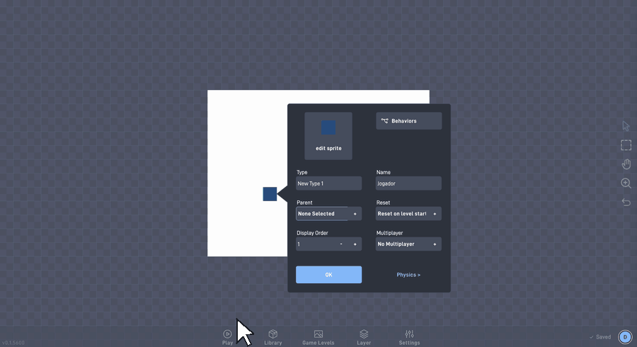
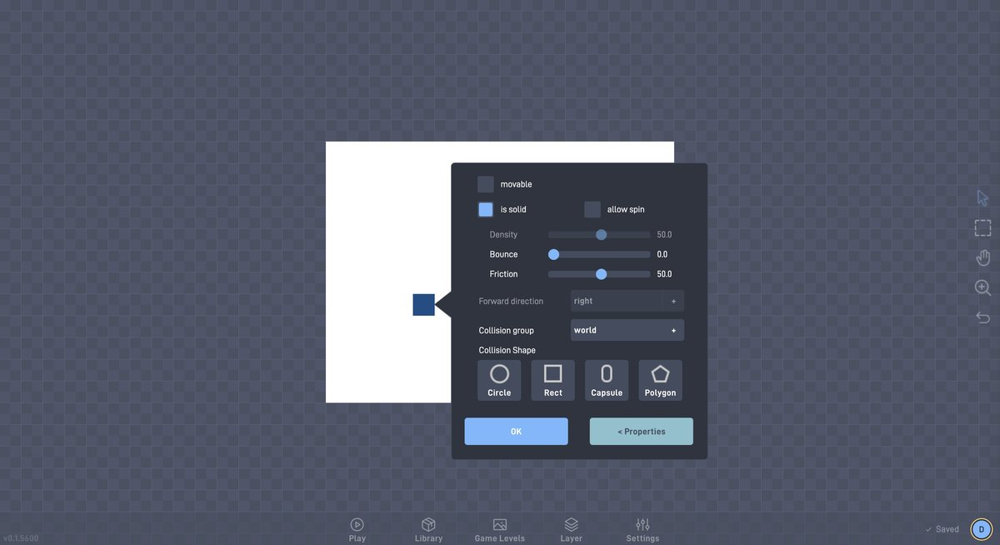
O clipe repete sozinho. Repare onde o cursor vai antes de clicar.
Foto da tela.
No painel do objeto, clique em Physics >, no canto de baixo à direita.
- Não acho o Physics
- É o texto azul do canto de baixo à direita do painel, ao lado do OK.
Marque MOVABLE
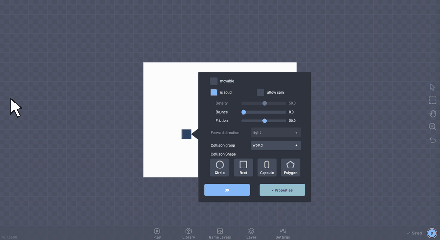
O clipe repete sozinho. Repare onde o cursor vai antes de clicar.
Foto da tela.
Clique na caixinha movable.
Ela libera as outras: sem ela, o boneco não anda, não cai e não pula.
- A caixinha não fica azul
- Clique no quadradinho, não na palavra.
- Density continua cinza
- É porque movable ainda está desmarcado.
O peso certo — é ele que deixa pular
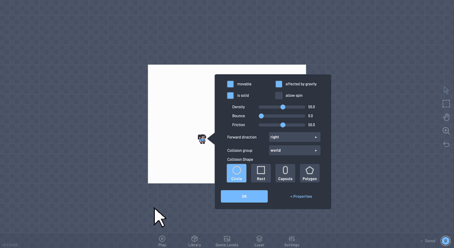
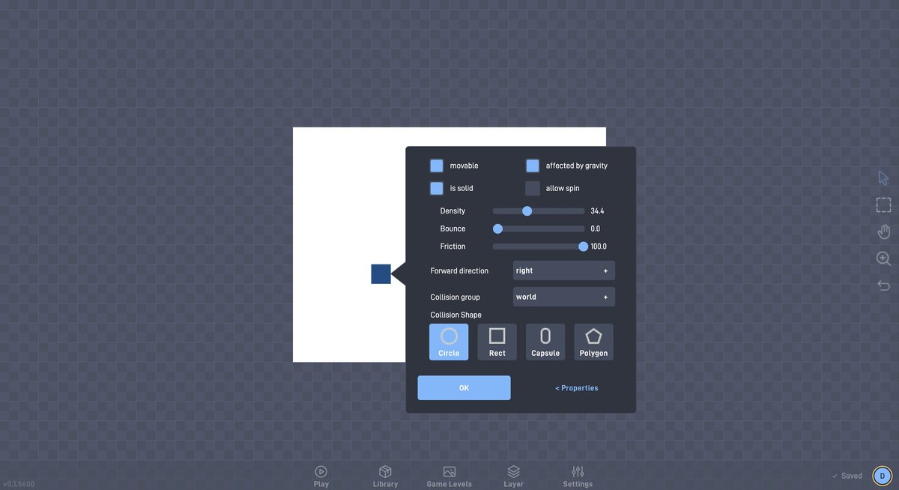
O clipe repete sozinho. Repare onde o cursor vai antes de clicar.
Foto da tela.
Agora o passo mais importante da aula.
1. Em Density (peso), clique na barrinha um pouco antes da metade, até o número ao lado ficar perto de 30. A barrinha marca o valor onde você clica: se passar de 30, clique um pouco mais para a esquerda; se ficar abaixo, um pouco mais para a direita.
2. Em Friction (atrito), clique na ponta direita da barrinha, para ficar 100.
Por que isso importa: o pulo do Flowlab tem uma força fixa. Se o boneco for muito pesado, essa força não levanta ele do chão — ele simplesmente não pula. Se for leve demais, ele sai voando para fora da tela. Perto de 30 ele pula a altura de umas quatro casas, que é o que esta fase precisa.
- Meu boneco não pula de jeito nenhum
- O peso está alto. Clique mais para a esquerda na barrinha do Density, até perto de 30.
- Ele pula e some da tela
- O peso está baixo demais. Clique um pouco mais para a direita.
- O número foi para 100 e eu queria 30
- Você clicou perto da ponta direita. Clique de novo um pouco antes da metade da barrinha.
Dê movimento e pulo ao jogador
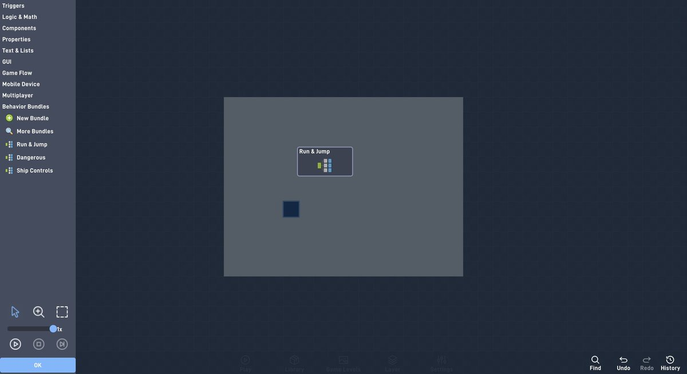
Foto da tela.
Feche a física no OK e clique em Behaviors.
Na coluna da esquerda, lá embaixo, clique em Behavior Bundles e arraste o Run & Jump para o meio da mesa.
Esse pacote dá as setas para andar e a seta de cima para pular. Espere uns segundos antes de fechar — o Flowlab precisa de um tempinho para guardar.
- Arrastei e não ficou nada
- Puxe de novo, mais devagar, e solte no meio da área escura.
- Fechei e o bloco sumiu
- Abra de novo e confira. Se sumiu mesmo, arraste outra vez e espere alguns segundos antes de fechar.
Faça o primeiro chão
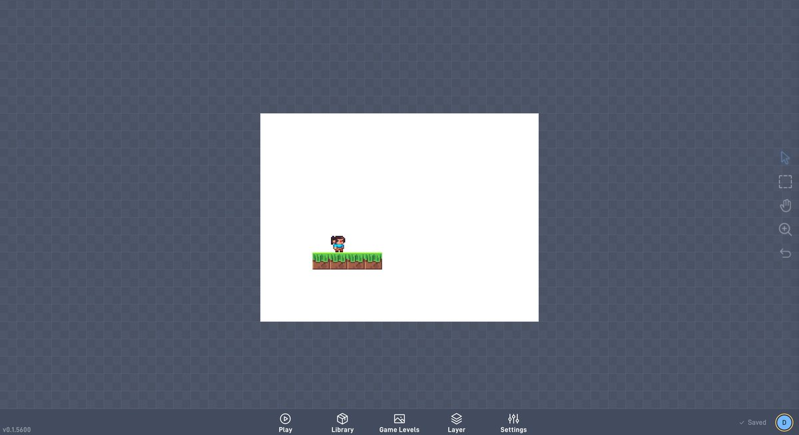
Foto da tela.
Feche as duas telas (OK da mesa de blocos e OK azul do painel).
Clique numa casa logo abaixo do boneco, escolha Create, chame de Chao e, em edit sprite, use o Browse para pegar o primeiro bloco de Flowlab Sprites › Blocks — o de terra com grama.
Depois clique nele, escolha Clone e clique nas casas ao lado para fazer uma plataforma de quatro casas, sem buraco. Clique em Done Cloning para parar.
O chão não leva física: não marque movable nele. Só o jogador se mexe; chão e plataformas ficam parados.
- Ficou buraco entre as peças
- Clique exatamente nas casas vizinhas; buraco faz o boneco cair.
- Meu chão caiu junto com o boneco
- Você marcou movable no chão. Clique nele, vá em Physics > e desmarque.
- Não paro de clonar
- Clique em Done Cloning, no lugar onde antes estava escrito Library.
Faça a segunda plataforma, mais alta
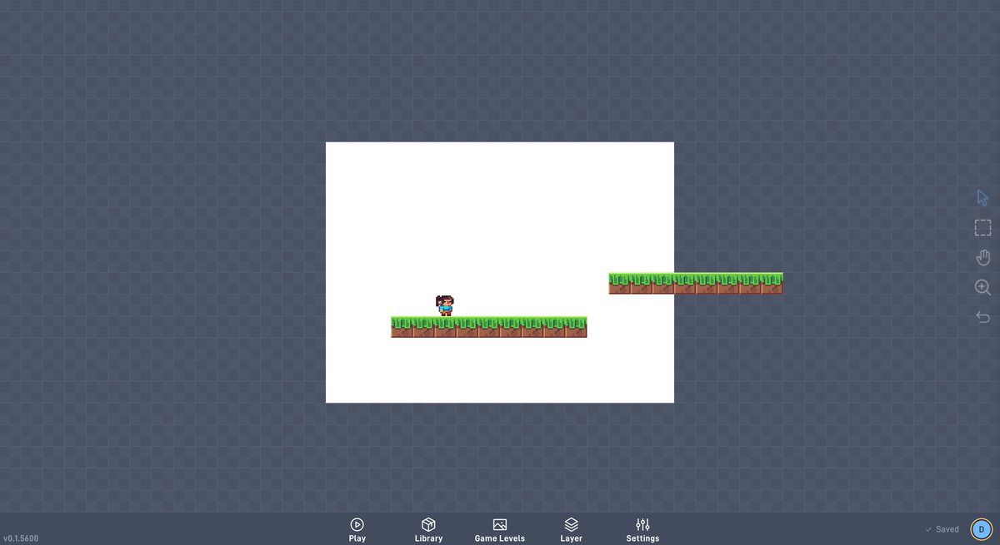
Foto da tela.
Agora uma plataforma mais alta e mais à direita — duas casas acima do chão e umas duas casas de distância.
Clique numa casa vazia ali, escolha Create, chame de Plataforma, dê a ela o mesmo bloco de grama pelo Browse e use o Clone para deixá-la com três casas.
- Minha plataforma ficou alta demais
- Duas casas acima do chão é o certo. Mais que isso, o pulo não alcança: clique nela, escolha Delete e refaça mais baixo.
Faça a terceira plataforma
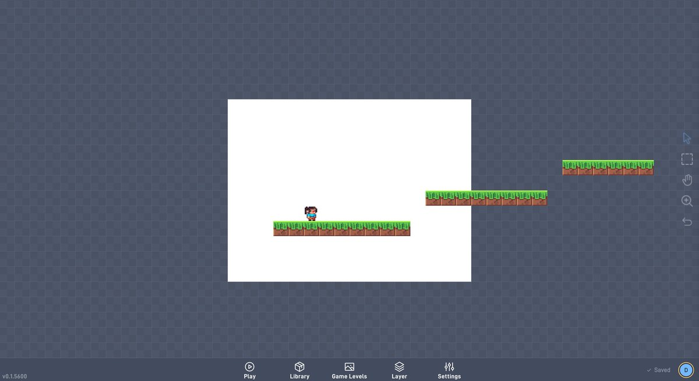
Foto da tela.
Repita: mais duas casas para cima e mais para a direita, uma terceira plataforma de três casas, chamada Alta e com o mesmo bloco de grama.
Olhe a fase inteira: tem de parecer uma escada de três degraus.
- A escada ficou longe demais
- Se o degrau estiver a mais de duas casas de altura, o pulo não chega. Apague e refaça mais perto.
Ponha a lava embaixo de tudo
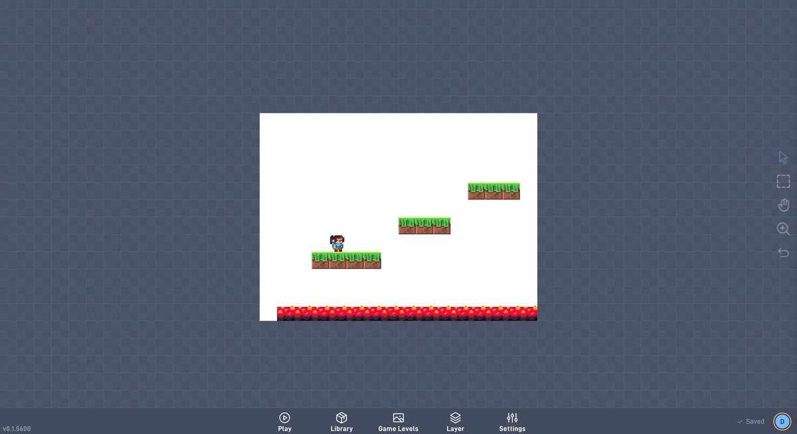
Foto da tela.
Lá embaixo, na última linha da folha branca, faça um objeto novo chamado Lava. Em edit sprite, clique em Browse, depois em Flowlab Sprites e em Terrain: a lava vermelha com bolhas está lá embaixo na grade — role até achá-la.
Depois use o Clone para esticar a lava de uma ponta à outra da folha. Ela precisa cobrir todo o fundo — é onde o jogador cai quando erra o pulo.
- Minha lava tem buracos
- O jogador pode cair exatamente no buraco e não acontecer nada. Clone nas casas que faltam.
- A lava ficou colada na plataforma
- Deixe pelo menos duas casas de distância, senão o jogador encosta nela sem querer.
Ensine a lava a recomeçar o jogo
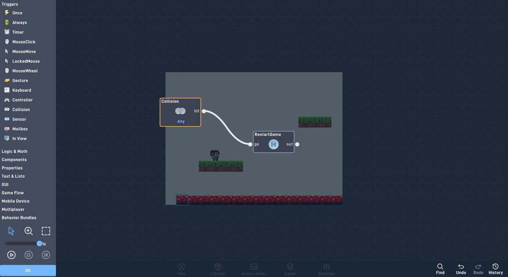
Foto da tela.
Clique na lava, escolha Edit e depois Behaviors. Monte dois blocos:
1. Em Triggers, arraste Collision — o quando: quando alguém encostar em mim.
2. Em Game Flow, arraste Restart Game — o o quê: recomece o jogo.
3. Ligue o fio da bolinha hit até a bolinha go.
Lido em voz alta: quando alguém encostar na lava, o jogo recomeça.
Feche as duas telas: OK da mesa de blocos e OK azul do painel.
- O fio não fica
- Comece o arrasto em cima da bolinha e solte em cima da outra bolinha, devagar.
- Arrastei e o bloco inteiro andou
- Você pegou o bloco, não a bolinha. Use o Undo do canto de baixo à direita e tente de novo, mirando na bolinha.
- Não acho o Restart Game
- Ele está na categoria Game Flow, na coluna da esquerda.
Ponha a estrela no alto
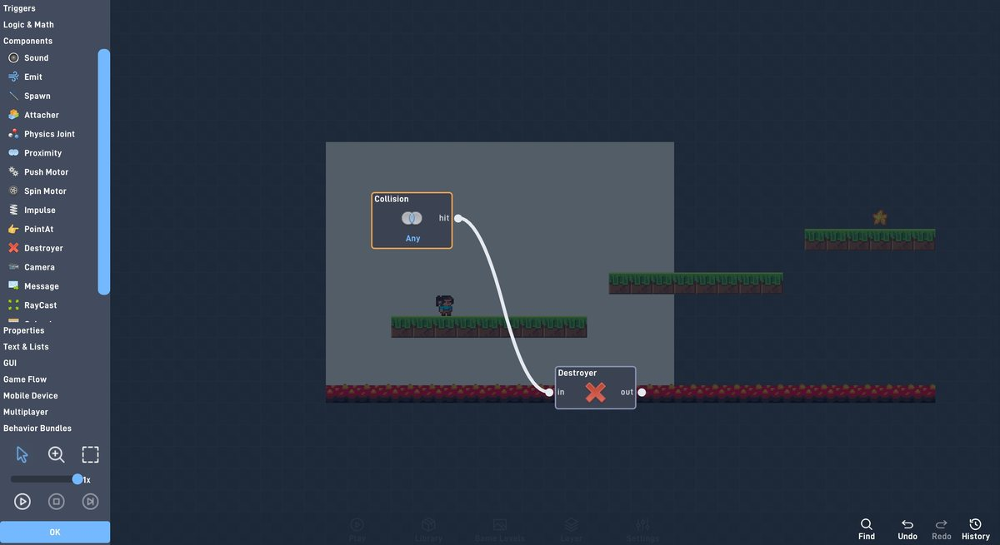
Foto da tela.
Em cima da terceira plataforma, crie um objeto chamado Estrela e, pelo Browse, pegue a estrela dourada em Flowlab Sprites › Objects.
Depois dê a ela o mesmo comportamento da moeda da Aula 1: em Behaviors, um Collision ligado a um Destroyer — quando alguém encostar em mim, eu sumo.
Feche as duas telas no OK, como sempre.
- A estrela caiu quando eu joguei
- Ela não precisa de física: deixe movable desmarcado nela.
- A estrela some sozinha no começo
- Ela está encostando na plataforma. Suba a estrela uma casa.
Jogue e pule os degraus
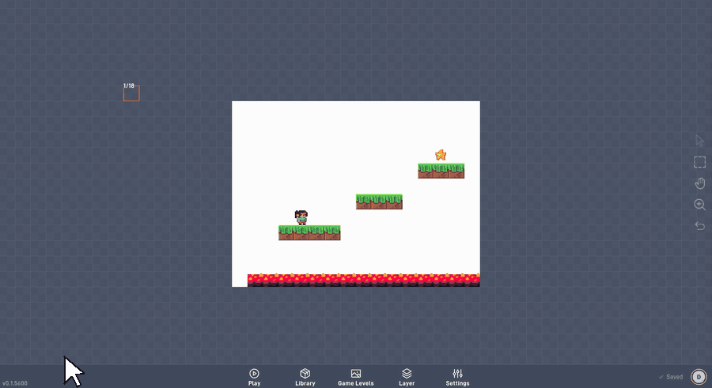
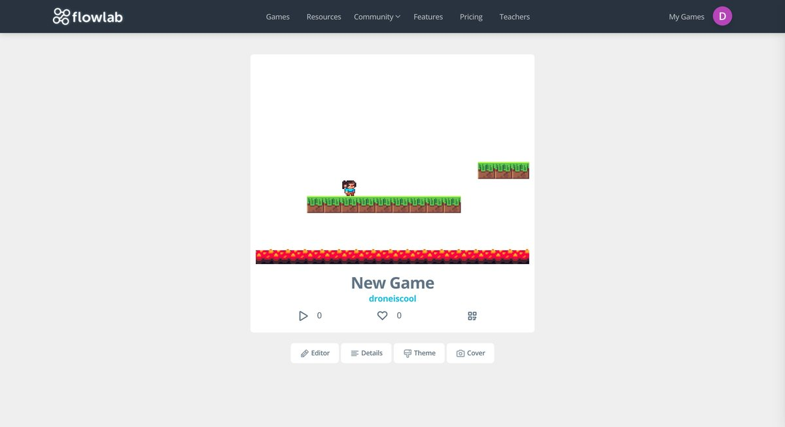
O clipe repete sozinho. Repare onde o cursor vai antes de clicar.
Foto da tela.
Clique em Play. Clique uma vez dentro do jogo e use:
→ para andar
↑ para pular
Suba os três degraus e pegue a estrela. Dá para andar no ar enquanto pula — segure a seta de lado enquanto sobe.
- Ele anda mas não pula
- Volte ao passo 11: o peso está alto demais. Density perto de 30.
- Ele pula e some
- O peso está baixo demais; aumente um pouco.
- Ele pula mas não alcança a plataforma
- O degrau está alto. Duas casas de altura é o limite confortável.
- Nada acontece quando aperto as setas
- Clique uma vez dentro do jogo antes: o teclado precisa estar 'dentro' dele.
Caia de propósito — e veja recomeçar
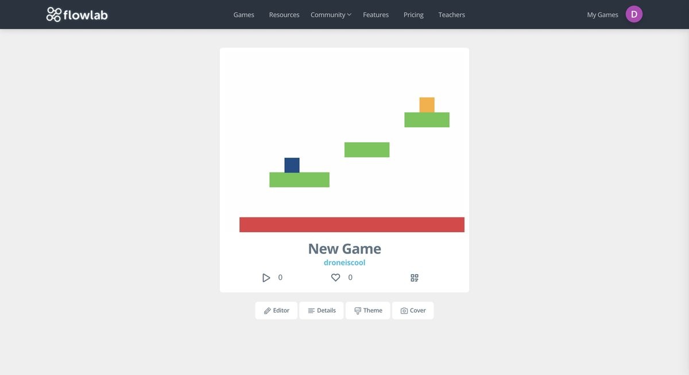
Foto da tela.
Agora erre de propósito: ande para a esquerda até cair do chão.
Quando o boneco encostar na lava, o jogo recomeça e ele volta para o lugar onde começou. É o seu primeiro jogo com chance de errar — e é isso que faz um jogo ser jogo.
O endereço desta página é o link do seu jogo: mande para a sua família tentar chegar na estrela.
- Caí e não aconteceu nada
- A lava não cobre aquele pedaço, ou o fio do passo 17 não ficou ligado. Confira os dois.
- O jogo recomeça sozinho sem eu cair
- O boneco está nascendo encostado na lava. Suba o chão ou desça a lava.